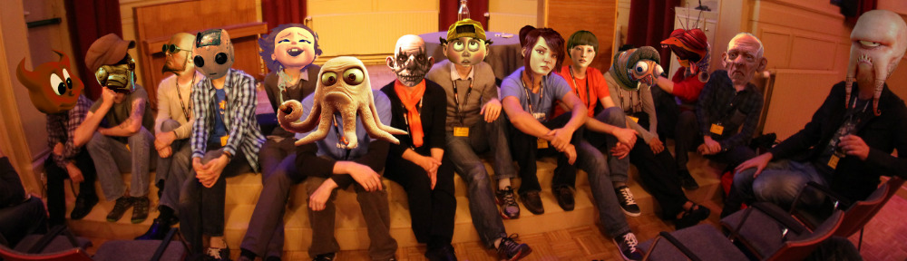

Help Out
Blender is being made by hundreds of contributors from around the world; by studios and individual artists, professionals and hobbyists, scientists and students, VFX experts and animators, and so on. All of them are united by the desire to have access to a fully free/open source 3D creation pipeline.
Support

The Blender Foundation is an independent public-benefit corporation, to facilitate the open source Blender projects.
Donate Here>>Develop
Read on to find out how to get involved, report bugs, see what’s happening, and discover resources and documentation.
Volunteers and professionals alike contribute to the official Blender release. This include developers, scripters, technical documentors (for wiki), translators, designers and users testing the software.
Learn More>>Write for the Website
People who would like to help with building the blender.org website are invited to join the bf-webcontent mailing list.